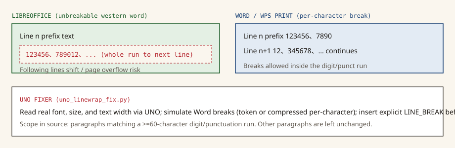

Static docs · not a live demoMITLinux :8899Windows :8090
A dual pipeline for Word layout fidelity: Linux conversion × real Windows printing
If a document-diff service on Linux converts Word with open-source tools and then parses text plus coordinates, pagination and line breaks can differ from what Word / WPS actually print on Windows. This repository ships two independently deployable, cross-verifiable pipelines. The compare UI lives inside the Linux Flask service — it does not run on this GitHub Pages site.
The README scenario: a document-diff service runs on Linux. When Word files are converted to PDF with open-source tools (for example LibreOffice) and parsed for text + coordinates, pagination and line breaks can differ from what Word / WPS print on Windows — lines shift, content spills across pages, and the comparison produces false mismatches.
The repository provides two independently deployable, cross-verifiable pipelines, not a single hosted layout engine:
Pipeline comparison from README.md / README_EN.md. License-cost wording is the project’s, not a commercial quote.
Pipeline
OS
Approach
License cost in the docs
A · linux-pipeline
Linux
LibreOffice headless + UNO line-wrap fixer → PDF → pdfplumber text + coordinates
Documented as zero (fully open-source dependencies)
B · windows-printnode
Windows
Real Word / WPS printing to the XPS virtual printer → parse XPS for text + coordinates + page renders
Reuse an existing Office license on the host (see licensing)
Compare UI
Built into A
Upload a Word file → both pipelines run → verdict + side-by-side pages + per-line text/coordinate diff
—
Print engines in PrintParseService.cs: if the Word.Application ProgID exists, WordComPrintEngine is used (engine name word); otherwise WordpadPrintEngine (wordpad-placeholder). Comments state WordPad layout is not Word and is only for plumbing. There is no separate WPS COM engine class in source. The README describes Word / WPS printing as the conceptual baseline.
02 · Architecture
Architecture
The SVG below is a faithful rendering of the README Mermaid flowchart: the upload fans out to A and B, which produce PDF-parse and XPS-parse results that meet on the compare page.
Dual-pipeline data flow (same edges as the README diagram)
Upload .doc / .docx.
Pipeline A (Linux :8899): LibreOffice + UNO line-wrap fixer → PDF → pdfplumber text + coordinates.
Pipeline B (Windows :8090): Word COM printing to the XPS virtual printer → XPS text + coordinates + page PNG.
Pipeline A / PDFPipeline B / XPSCompare UI (self-hosted Flask only)
03 · Line wrap
Why LibreOffice PDF can differ from real printing
Per the README: LibreOffice and Word apply different line-breaking rules. The classic failure is a long run of digits + full-width punctuation. Word / WPS treat it as a sequence that may break character by character; LibreOffice treats the whole run as one unbreakable western word and pushes it to the next line — shifting later lines and spilling content onto the next page.
Same long digit run under two break rules (schematic, not a captured screenshot)

uno_linewrap_fix.py reads real fonts, sizes, and text width through the UNO API, simulates breaks with two models the source comments describe as reverse-engineered from baseline PDFs, and inserts explicit LINE_BREAK characters before export:
Token model (simulate_breaks_token): used when the paragraph contains glued digit,digit runs. A digit/half-width comma-or-dot streak may absorb one full-width punctuator; breaks are allowed only at token ends.
Compressed per-character model (simulate_breaks_compressed): full-width punctuated digit runs; width is about 0.492em for ASCII and 0.92em otherwise.
Only paragraphs matching [0-9、，。,．]{60,} are processed; all other paragraphs are left unchanged.
Text width comes from the page style. The source adds about 4.6pt of Word-versus-LO width delta, plus 14.1pt hanging punctuation on the token path (scaled by font size).
Connects to the UNO socket at 127.0.0.1:2002 (start_uno.sh / lo-uno.service).
The README states that, on the listed production/test documents, output matches the Windows print baseline with identical per-page line counts. That is a record for those samples, not a guarantee for arbitrary Word files. See recorded tests and limitations.
Prefer LibreOffice’s bundled Python plus the line-wrap fixer to write a PDF.
On fixer failure or a tiny output, fall back to soffice --headless --convert-to pdf:writer_pdf_Export (no inserted breaks).
pdfplumber.extract_words with Y_TOL = 3.5 (comment: measured 2.1pt filled-text baseline drift on the Windows dual pipeline; tolerance must be ≥3pt), clustered into lines by top.
Optional: POST {XPS_API}/api/print-parse. Default XPS_API=http://127.0.0.1:8090. XPS coordinates are multiplied by 0.75 (96 dpi → PDF pt). Blank lines are dropped; raw_line_count is kept.
Pipeline B · PrintParseService.cs
HttpListener prefix http://+:8090/. Jobs print and parse on an STA thread (required for WPF rendering).
Print to Microsoft XPS Document Writer, whose port setup.ps1 pins to C:\printnode\print\output.xps.
Walk the XPS OPC package manually (avoids a null GetFixedDocumentSequence on interleaved driver XPS).
Rewrite OpenXPS namespaces to the MS XPS namespace WPF loads; extract Glyphs; merge lines with a 3.0 baseline tolerance.
Rasterize each page at 2× via RenderTargetBitmap.
Compare-page verdict (Flask-embedded, not this site)
The page in app.py: when XPS data exists, the overall verdict is whether each page’s line counts match. The per-line table compares whitespace-normalized text and shows Δtop / Δx0. The UI flags Δtop > 2.5 or Δx0 > 3.5 as coordinate drift. If B fails, xps_error is shown; the UI does not pretend both sides succeeded.
05 · Repo
Repository layout
linux-pipeline/ Pipeline A · Linux word2pdf + dual-pipeline compare service
├── app.py Flask (:8899) upload Word → A/B parse + compare UI
├── uno_linewrap_fix.py UNO line-wrap fixer (two breaking models)
├── requirements.txt flask==3.0.3, pdfplumber==0.11.4, requests
├── start_uno.sh LibreOffice UNO listener on 127.0.0.1:2002
├── lo-uno.service systemd · UNO
└── word2pdf-test.service systemd · Flask; SOFFICE_BIN points at LO 7.6
windows-printnode/ Pipeline B · Windows print-parse node (:8090)
├── PrintParseService.cs Single file: print → XPS → text + coords + PNG
├── setup.ps1 Pin XPS file port · csc compile · scheduled autostart
├── setup.cmd cmd wrapper for setup.ps1
└── autounattend.xml Win10 VM answer file (replace the password placeholder)
docs/ This static GitHub Pages site (no conversion backend)
06 · Deploy
Deployment and how to test
Pipeline A · Linux
The README states verification on CentOS 7. Steps match the repository:
# 1. Install LibreOffice 7.6 to /opt/libreoffice7.6 (version pinned — do not upgrade casually)
# 2. Deploy the code
mkdir -p /opt/word2pdf-test
cp linux-pipeline/{app.py,uno_linewrap_fix.py,requirements.txt} /opt/word2pdf-test/
python3 -m venv /opt/word2pdf-test/venv
/opt/word2pdf-test/venv/bin/pip install -r /opt/word2pdf-test/requirements.txt
# 3. Register and start services
cp linux-pipeline/{lo-uno.service,word2pdf-test.service} /etc/systemd/system/
systemctl daemon-reload
systemctl enable --now lo-uno word2pdf-test
# 4. (Optional) Hook up pipeline B
systemctl edit word2pdf-test # Environment=XPS_API=http://<windows-node-ip>:8090
Then open http://<server>:8899 and upload .doc / .docx. That URL is your host, not this GitHub Pages site.
Pipeline B · Windows
README: no VM required — any office PC with Word or WPS can host the node. From an Administrator PowerShell inside windows-printnode:
setup.ps1 creates C:\printnode, opens port 8090 and the URL ACL, pins Microsoft XPS Document Writer to C:\printnode\print\output.xps, compiles with system csc.exe (.NET Framework 4.x), and registers a PrintParseService scheduled task. It also touches RDP, a high-performance power plan, and automatic-update policy — review those against your security requirements before running it.
Pipeline B HTTP API (:8090), from the README and PrintParseService.cs.
Method
Path
Description
GET
/health
Health check; JSON includes status, engine (word or wordpad-placeholder), and printer
POST
/api/print-parse
Multipart field file → per-page text + coordinates + image_url
GET
/images/{job}/{n}.png
Page render image
Optional unattended VM: package autounattend.xml, setup.cmd, setup.ps1, and PrintParseService.cs as an ISO. The answer-file password placeholder is CHANGE-ME-Password — replace it before use.
Publishing this site (GitHub Pages)
.github/workflows/pages.yml publishes docs/ on pushes to main using the official actions/configure-pages, upload-pages-artifact, and deploy-pages actions. Set the repository Pages source to GitHub Actions. Intended URL: https://unstoppablecurry.github.io/word-print-layout-pipeline/.
07 · Tests
Results recorded in the README
The table is a complete transcript of the README “Verified Results” section. Line counts are from those test documents on pipeline A versus pipeline B (print baseline). The repo does not add further documents, timings, or accuracy rates.
To test yourself, upload those or other files to a deployed :8899 service and read the verdict plus the per-line table. GitHub Pages cannot substitute for that step.
08 · License
Licensing
This project’s code: MIT License (Copyright 2026 Qian Wang); the README says it is free for commercial use.
Pipeline A: depends on LibreOffice (MPL 2.0). The README says server-side use raises no licensing issues — confirm against LibreOffice’s terms and your counsel.
Pipeline B: depends on Windows + Microsoft Word / WPS; the host machine must itself be properly licensed. The README notes that Microsoft’s licensing terms do not permit server-side Office automation serving unlicensed clients.
Commercial SDKs (README examples: Aspose / Spire, etc.): the docs say measured line-breaking differed from real Word printing, with licenses in the thousands to tens of thousands of USD per year; this project does not use them. This page does not evaluate those products’ current behavior or pricing.
09 · Boundaries
Limitations and what this site does not claim
No live demo. This hostname serves static HTML/CSS/SVG only. You cannot upload Word or call :8899 / :8090 here.
The UNO fixer is scoped. It only rewrites paragraphs with a ≥60-character digit/specified-punctuation run. The models are calibrated from particular baselines; they are not a full Word layout engine.
Fallback drops the fixer. If UNO conversion fails, convert_to_pdf uses a bare soffice convert; wrapping may still diverge from print.
WordPad fallback is not the print baseline. Without Word, the engine name is wordpad-placeholder; the source says layout ≠ Word.
The compare UI is line-count first. The overall verdict compares per-page line counts. Text and coordinates use tolerances; close coordinates are not a pixel-identical visual guarantee.
The sample table is not a population accuracy rate. The README’s 100% per-page line-count match applies to the listed documents only. It is not extrapolated to untested files, LibreOffice versions, or printer drivers.
Versions are pinned. Docs require LibreOffice 7.6 at /opt/libreoffice7.6 and warn against casual upgrades. Linux verification is documented for CentOS 7; other distros are not claimed as tested.
No customers, performance, or SLA figures. This site does not invent deployments, throughput, latency, or “all platforms supported.”